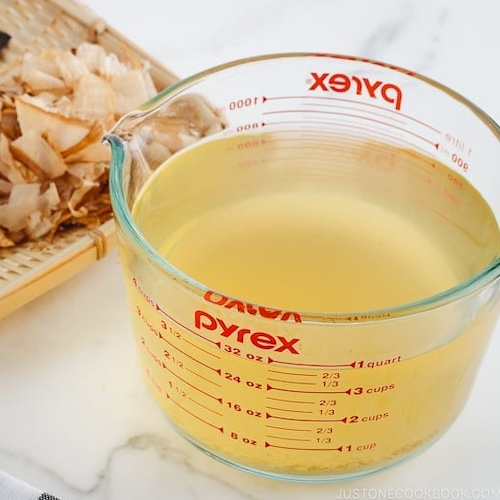

Miso Salmon

Description
Used in many Japanese recipes, this stock is made from kombu (dried kelp), bonito flakes (shaved skipjack tuna), sardine, or a combination of all or two of them which creates a unique umami flavor.
Ingredients
- 0.7 oz kombu
- 3 cups katsuobushi
- 4 cups water
Steps
- Gently clean the kombu with a damp cloth, without removing the white powdery “umami” substances. Make a couple of slits on the kombu.
- Put the kombu and water in a saucepan and soak for 2-3 hours (at least 30 minutes).
- Slowly bring to a boil over medium low heat. Just before boiling, turn off the heat and remove the kombu. If you don’t remove the kombu, the dashi will become slimy and bitter.
- Let the dashi cool a bit. Add the katsuobushi and bring it to a boil again. Once the dashi is boiling, reduce the heat and simmer for 30 seconds. Turn off the heat and let the katsuobushi sink to the bottom, about 10 minutes.
- Strain the dashi through a sieve lined with a paper towel set over a bowl. Gently twist and squeeze the paper towel to release the extra dashi into the bowl.
Home